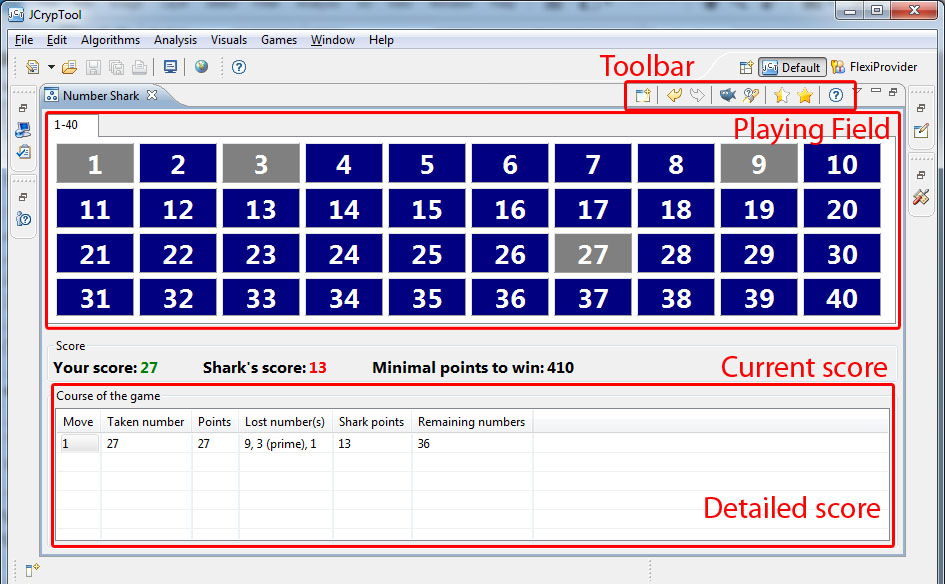
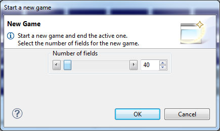
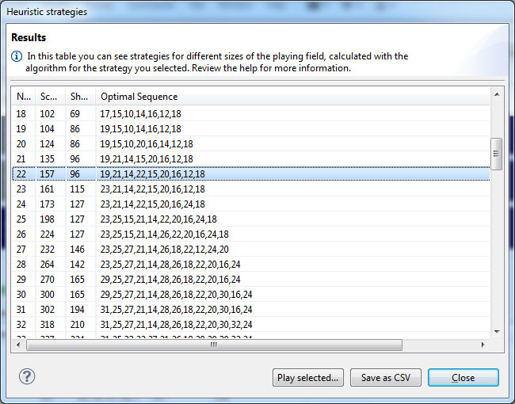
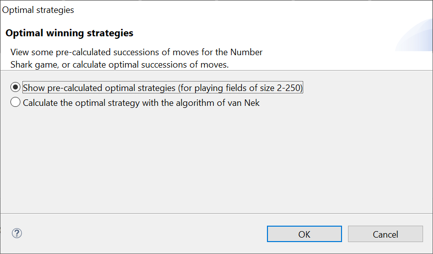
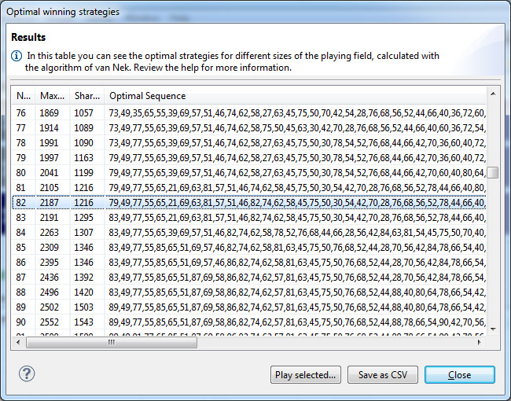

the wizard for heuristic strategies appears.
the wizard for heuristic strategies appears.This manual explains the elements of the Number Shark plugin, and heuristic and optimal winning strategies.
The following image represents the start screen of the Number Shark game. The main parts are the toolbar, the playing field, the score, and a table with detailed information of the game course.

The playing field is a rectangle filled with buttons with the numbers from 1 to e.g. 20. You can select these numbers by pressing a button. If a game has more than 40 buttons (like in the following picture where the size of the playing field is 190) then the buttons are distributed under several tabs each with up to 40 buttons.
Numbers which are selectable are displayed in blue. Numbers which are already taken appear in gray and cannot be selected again (they are deactivated).
If you remain with the mouse on an active number for a second, a tooltip will appear, providing detailed information such as remaining active divisors and whether the number itself is a divisor of another number in the playing field.
By clicking on "New Game" a dialog appears, where you can set up a new game and define the size of the playing field. The size can vary from 2 to 1024. Starting a new game discontinues the already running game.

The last move can be made undone. So step-by-step all moves can be reverted. If you take back a move, you can try another move sequence (if you think you made a mistake).
An undone step can be redone.
This button deactivates all numbers which the Number Shark will get for sure at the current stage of the game. Such numbers are larger than half of the size of the playing field and without any active divisors.
Generates a hint for a number which should be chosen next. There are situations where a hint cannot be provided.
This icon opens a wizard, where different heuristic strategies generate move sequences to win the game. Further information can be found below in 2. Heuristic strategies.
Opens a wizard to calculate strategies, which are optimal. Detailed information can be found below in 3. Optimal strategies .
Opens the online help.
The overview about the points can be found in the two groups "Current points" and "Course of the game".
In this group, your score and the score of the Number Shark are displayed – the colors indicate who is currently leading. If your points are in green, you are about to win, if your points are shown in red, the Number Shark is at the forefront.
The number next to "Minimal points to win" is the total number (score) you should try to reach at least.
This table provides detailed information about all moves of the game. For each move you can review which number you took, how many points you had, and which numbers you lost in this move. Further more, you get the number of active numbers left (remaining ones) and the score of the Number Shark of each move.
After playing a bit you might already have developed your first strategy how to win against the Number Shark. The wizard for heuristic strategies also provides some well elaborated move sequences which help you win.
By clicking on the (half filled) the wizard for heuristic strategies appears.
At the moment three different strategies are implemented which generate (different) move sequences. These strategies can be selected with the three radio buttons. The lower two sliders define the lower and upper bounds of the playing field sizes for which the move sequences will be calculated.
This strategy takes the number which maximizes the getting in each round. This means it searches the number where the difference (between the number you'll get and the sum of the divisors the Number Shark will get) is at its maximum. If the number is not unique, the maximum of those numbers will be taken.
This strategy is based on the algorithm of van Nek which is used to find optimal winning move sequences. For details see below 3. Optimal strategies.
It consists of the following 5 steps (where N is the size of the playing field):
This strategy consists of the following 6 steps (where N is the size of the playing field):
Precise (mathematical) information can be found here:
Discussion of good and optimal strategies for the Number Shark game
By clicking "OK", the move sequences will be calculated with the bounds and the algorithm you have selected. Depending on your computer the process of calculating might take a while.
Finally the result dialog will appear. Sorted by the size of the playing field, you can find the following information: First you see the score you can reach, then the score the Number Shark will get. Next is the move sequence which is required to reach the points. In the last column the time which was need to calculate the sequence is shown. If you select a row you can press the button "Play selected...": Then a new game will be set up and the moves of the sequence you selected will be played in the Number Shark main window.
With "Save as..." the whole table can be exported as a ".csv"file which then can be opened e.g. in Excel or Calc.

You might have already found your own strategy so winning against the Number Shark is not a problem for you anymore. Then the question arises about an optimal move sequence – a sequence which leads to the maximum score. And you might ask yourself how this optimal strategy works. (Note: The maximum core for a playing field size is unique, but sequences are not: There are different sequences which lead to the same score.)
Unfortunately, we haven't yet found such a general strategy. The first numbers to be taken are clear – e.g. the first move must take the largest prime number. But then at some point there are several ways you could go. With an algorithm of van Nek, we managed to cleverly try all possibilities and discard useless branches, such that an optimal move sequence can be given. These optimal move sequences (up to n = 404) can be shown and even recalculated in the wizard.
A look at the wizard is worth it, maybe you can find a strategy which always finds an optimal sequence?
By clicking on the (completely filled) star icon in the toolbar the wizard to calculate optimal strategies pops up.
There you got to choose between the following:
Already calculated move sequences for playing field sizes between 2 and 250 can be viewed and analyzed here.
By choosing this option, move sequences can be calculated with the backtracking algorithm developed by van Nek. Further more, you can set the range of playing field sizes you want the sequences to be calculated for.
Note: The run time of the algorithm is exponential in the size of the playing field, so depending on the interval you chose, the calculating process might take a while.
Here we give a (simplified) description of the algorithm (N again is the size of the playing field):
This description of the algorithm is just the main idea. Van Nek used in his implementation some more queries because it is not always needed to evaluate all subproblems till the end. E.g. before considering a subproblem the algorithm tests if it is still possible with the remaining numbers to exceed the current optimal score. Further progress was made by using the results of the faster heuristic algorithms as good lower bounds for the score.
By clicking on "OK", the move sequences of the selected playing field sizes will be shown or re-calculated. Depending on your computer the process of calculating might take a while.
Finally the result dialog will appear. Sorted by the size of the playing field, you can find the following information: First you see the maximal score you can reach, then the score the Number Shark will get. Next is the move sequence which is required to reach the score. In the last column the time which was need to calculate the sequence is shown. If you select a row you can press the button "Play selected..." Then a new game will be set up and the moves of the sequence you selected will be played in the Number Shark main window.
With "Save as..." the whole table can be exported as a ".csv" file which then can be opened e.g. in Excel or Calc.

If you find an optimal strategy please let us know (e.g. via email to bernhard.esslinger@uni-siegen.de).
Another name of the "Number Shark" game is "Taxman" game.
The site Integer Sequences of the OEIS Foundation contains the known maximum scores for n=1,...,404. There, the sequence can also be displayed graphically. Meanwhile, for each n an according optimal move sequence is stated in the notes (thanks to Dan Hoey). A formula for the optimal value (score) is not known yet.
Further references can be found here.